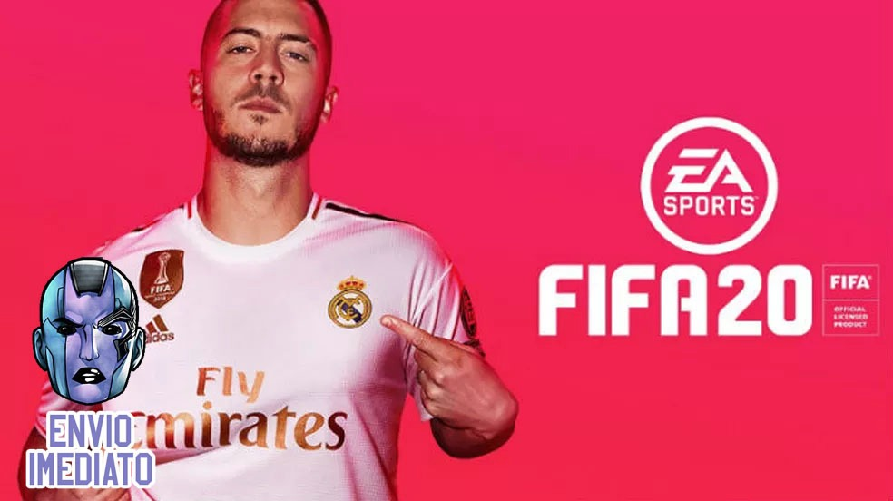
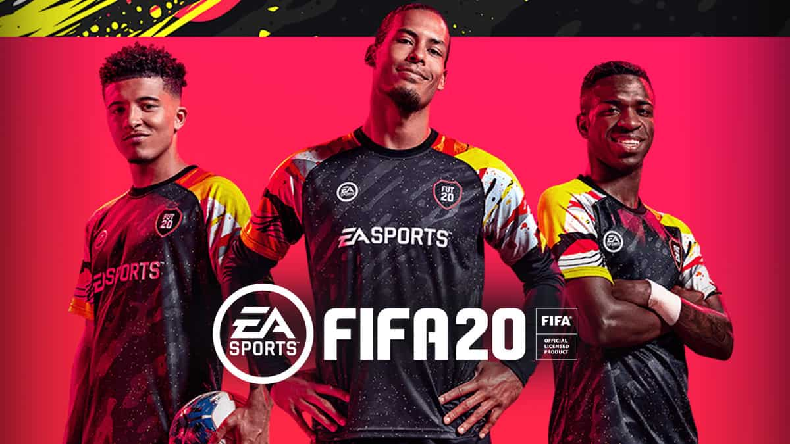

FIFA 20 é um jogo eletrônico de futebol desenvolvido e publicado pela EA Sports, lançado mundialmente em 27 de setembro de 2019. Este é o vigésimo sétimo título da série FIFA e o quarto a usar o mecanismo de jogo da Frostbite para Xbox One, PS4 e PC.
FIFA 20 é um videogame de simulação de futebol publicado pela Electronic Arts como parte da série FIFA . É a 27ª edição dasérie FIFA e foi lançada em 27 de setembro de 2019 para Microsoft Windows , PlayStation 4 , Xbox One e Nintendo Switch. O ala do Real Madrid , Eden Hazard, foi eleito a nova estrela da capa da Regular Edition, com o zagueiro do Liverpool Virgil van Dijk na capa da Champions Edition. O ex - meio-campista da Juventus e do Real Madrid, Zinedine Zidane, foi mais tarde nomeado como a estrela da capa da Ultimate Edition.
As mudanças na jogabilidade do FIFA 20 se concentram principalmente em um novo recurso chamado VOLTA Football . O modo, que se traduz em 'retorno' em português, concentra-se no futebol de rua, em vez dos jogos tradicionais associados à série FIFA. Inclui várias opções para jogar em três contra três, quatro contra quatro e cinco contra cinco partidas, bem como com regras profissionais de futsal . O modo incorporará o mesmo mecanismo, mas enfatiza a habilidade e o jogo independente, em vez do jogo tático ou em equipe. Além disso, os jogadores têm a opção de personalizar seus jogadores por gênero, roupas, sapatos, chapéus e tatuagens. Após a conclusão da série de três partes "The Journey" no FIFA 19 , os jogadores agora podem ter um modo de história semelhante no VOLTA Football , que seria jogado com o próprio personagem do jogador. Também foram feitas alterações no modo tradicional 11 versus 11 para incentivar mais criação de espaço individual e fora da bola. Novas mecânicas de pênaltis e de cobrança de falta foram implementadas e foram feitas atualizações na física da bola.

